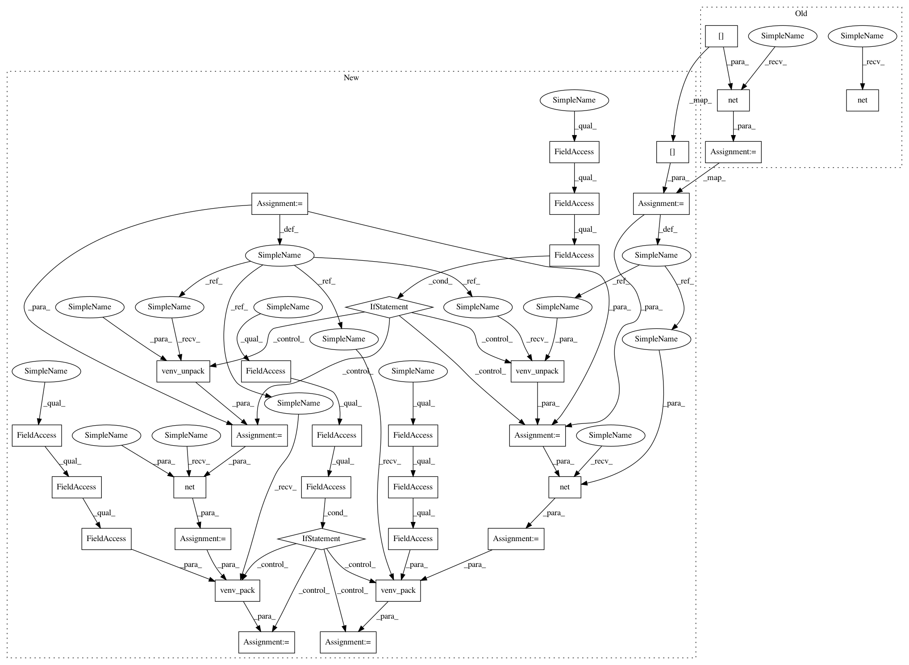

296881376f1d04fd189ec2dfa7878400a59d2b1d,slm_lab/agent/algorithm/dqn.py,VanillaDQN,calc_q_loss,#VanillaDQN#Any#,93
Before Change
def calc_q_loss(self, batch):
"""Compute the Q value loss using predicted and target Q values from the appropriate networks"""
q_preds = self.net(batch["states"])
act_q_preds = q_preds.gather(-1, batch["actions"].long().unsqueeze(-1)).squeeze(-1)
next_q_preds = self.net(batch["next_states"])
// Bellman equation: compute max_q_targets using reward and max estimated Q values (0 if no next_state)
max_next_q_preds, _ = next_q_preds.max(dim=-1, keepdim=True)
max_q_targets = batch["rewards"] + self.gamma * (1 - batch["dones"]) * max_next_q_preds
max_q_targets = max_q_targets.detach()
After Change
def calc_q_loss(self, batch):
"""Compute the Q value loss using predicted and target Q values from the appropriate networks"""
states = batch["states"]
next_states = batch["next_states"]
if self.body.env.is_venv:
states = math_util.venv_unpack(states)
next_states = math_util.venv_unpack(next_states)
q_preds = self.net(states)
next_q_preds = self.net(next_states)
if self.body.env.is_venv:
q_preds = math_util.venv_pack(q_preds, self.body.env.num_envs)
next_q_preds = math_util.venv_pack(next_q_preds, self.body.env.num_envs)
act_q_preds = q_preds.gather(-1, batch["actions"].long().unsqueeze(-1)).squeeze(-1)
// Bellman equation: compute max_q_targets using reward and max estimated Q values (0 if no next_state)
max_next_q_preds, _ = next_q_preds.max(dim=-1, keepdim=True)
max_q_targets = batch["rewards"] + self.gamma * (1 - batch["dones"]) * max_next_q_preds
In pattern: SUPERPATTERN
Frequency: 3
Non-data size: 33
Instances
Project Name: kengz/SLM-Lab
Commit Name: 296881376f1d04fd189ec2dfa7878400a59d2b1d
Time: 2019-04-30
Author: kengzwl@gmail.com
File Name: slm_lab/agent/algorithm/dqn.py
Class Name: VanillaDQN
Method Name: calc_q_loss
Project Name: kengz/SLM-Lab
Commit Name: 58b42927fc44b779e8c7dd8507d6cfebe344f2ef
Time: 2019-05-01
Author: kengzwl@gmail.com
File Name: slm_lab/agent/algorithm/sarsa.py
Class Name: SARSA
Method Name: calc_q_loss
Project Name: kengz/SLM-Lab
Commit Name: 032857a0c77cb6d63b391237b402ba01875d6989
Time: 2019-04-30
Author: kengzwl@gmail.com
File Name: slm_lab/agent/algorithm/sarsa.py
Class Name: SARSA
Method Name: calc_q_loss
Project Name: kengz/SLM-Lab
Commit Name: 296881376f1d04fd189ec2dfa7878400a59d2b1d
Time: 2019-04-30
Author: kengzwl@gmail.com
File Name: slm_lab/agent/algorithm/dqn.py
Class Name: VanillaDQN
Method Name: calc_q_loss